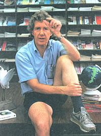

Lester Brown, head of the Worldwatch Institute, indicates how thin the topsoil is in some parts of the world. Brown recently won a $250,000 award from the prestigious MacArthur Foundation for his outstanding work.